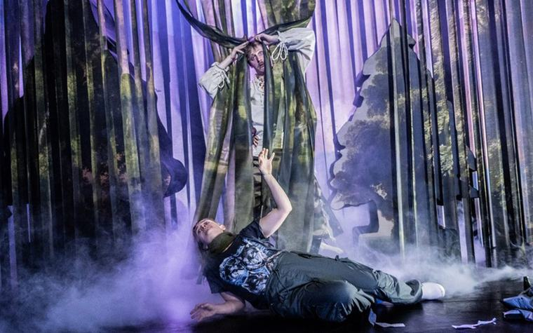
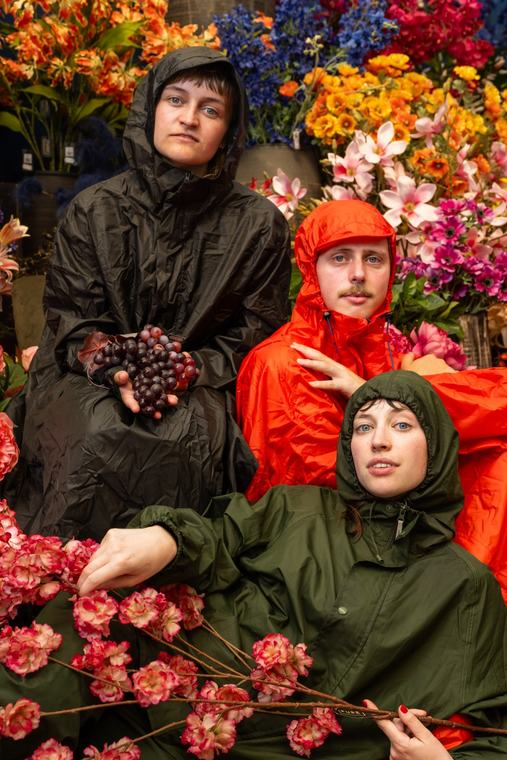
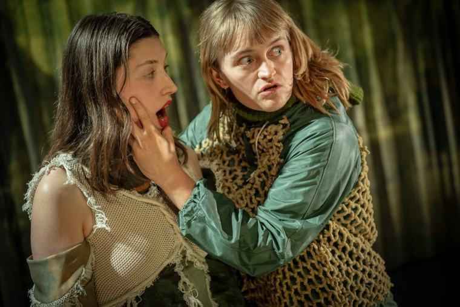
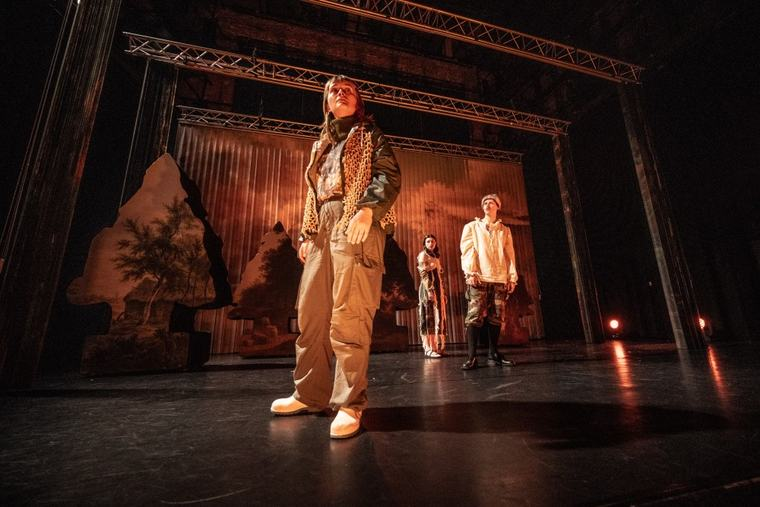
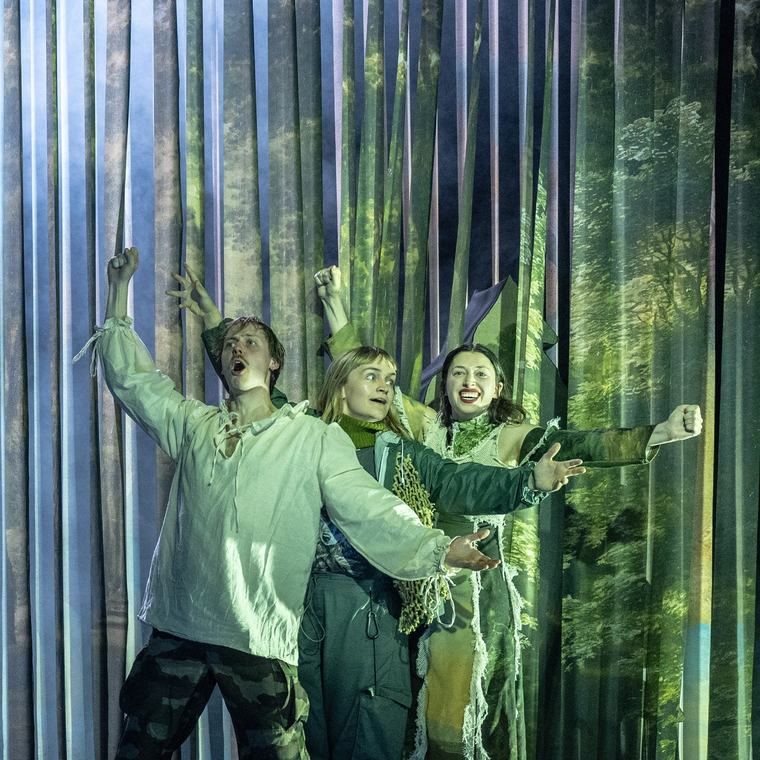
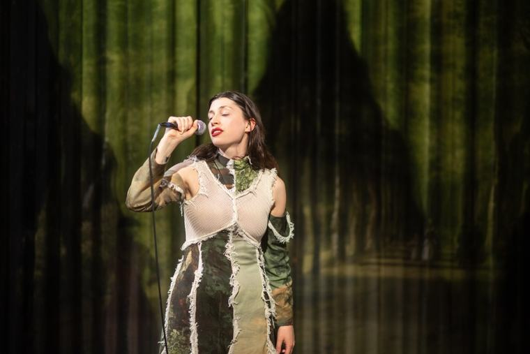
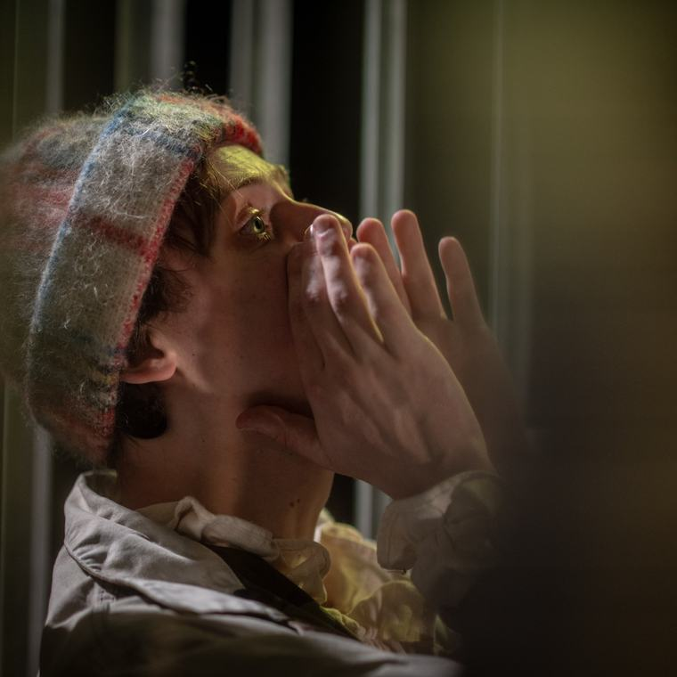
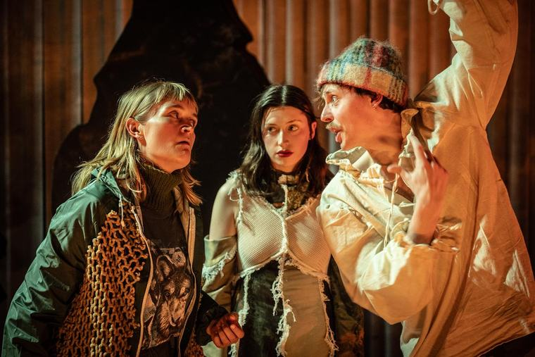
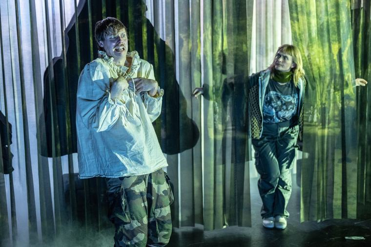
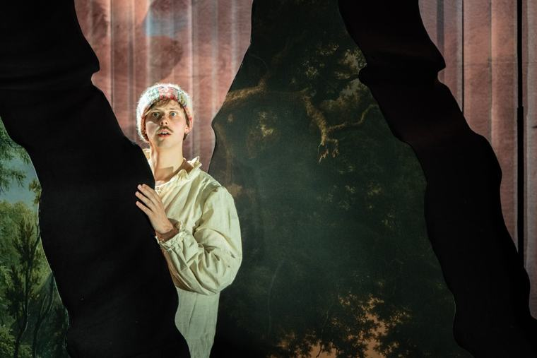

As The World Hurts

A romantic Into the Wild about people and nature, the first part of Antiklimax's trilogy on romanticism.
A romantically inclined but desperate young man makes the decision of his life: he sacrifices his cosy cultured existence and heads into the woods. Free of laws, duties and etiquette, he hopes to get closer to his true nature. But is there still room for humans in nature? A romantic safari full of wordplay, existential questions, fantasy and music.
“Een verrukkelijk, lichtvoetig theatersprookje.”

Credits
- concept & text
- Antiklimax
- direction
- Koen van Seuren
- performers
- David Westera, Hélène Vrijdag, Emma Vermeulen
- set & costumes
- Caz Egelie
- music
- Aart Strootman
- dramaturgy
- Judith Blankenberg
- lighting design
- Bogi Bakker
- text coach
- Joachim Robbrecht
- co-production
- Grand Theatre Groningen
- photography
- Niels “Knelis” Meijer
Performances
- 4 May 2024 premiere, Grand Theatre Groningen
- 2024–2025 tour: Theater Bellevue Amsterdam, Theater Kikker Utrecht, Theater Walhalla Rotterdam, Schuur Haarlem, Zaal 3 The Hague, Verkadefabriek Den Bosch









photo: Niels “Knelis” Meijer